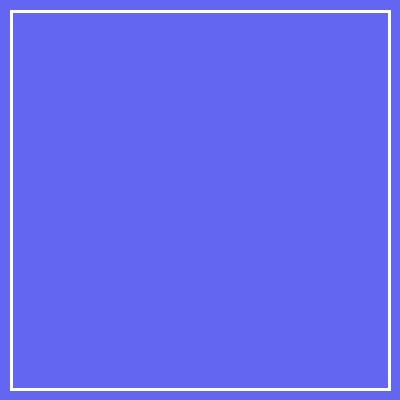

Привіт! Я — студент-розробник
Захоплююсь веб-розробкою, програмуванням та сучасними технологіями
Наразі активно вивчаю верстку веб-сторінок за допомогою HTML5 та CSS3, засвоюю правила верстки через CSS Flexbox та принцип побудови гармонійних інтерфейсів. Мій мета — створювати якісні, швидкі та зручні сайти.
Мої інтереси та хобі
- Веб-розробка: вивчення HTML, CSS, JavaScript та фреймворків.
- Геймінг та модинг: цікавлюсь ігровою індустрією та алгоритмами.
- Саморозвиток: читання технічної літератури та створення власних пет-проєктів.
- Кава та музика: найкраще джерело натхнення під час написання коду.